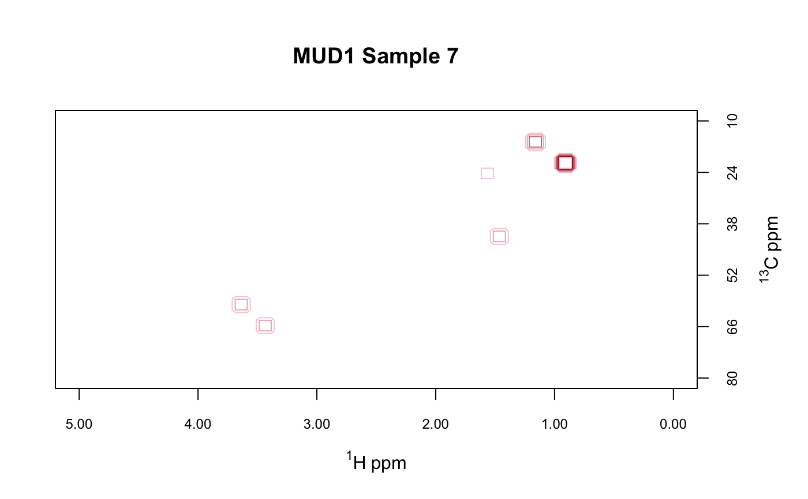

Plots a 2D spectrum stored in a Spectra2D object.
This is primarily for inspection and for preparation of final plots.
If you need to do extensive exploration, you should probably go back
to the spectrometer.
plotSpectra2D(spectra, which = 1, lvls = NULL, cols = NULL, showNA = TRUE, showGrid = FALSE, ...)
| spectra | An object of S3 class |
|---|---|
| which | An integer specifying which spectrum to plot. May be a vector. |
| lvls | A numeric vector specifying the levels at which to compute contours.
If |
| cols | A vector of valid color designations. If provided, must be of the
the same length as |
| showNA | Logical. Should the locations of peaks removed by |
| showGrid | Logical. If TRUE, show a dotted gray line at each tick mark. |
| … | Additional parameters to be passed to the plotting routines. |
Side effect is a plot.
One cannot remove frequencies from the interior of a 2D NMR data set and expect to get a meaningful contour plot, because doing so puts unrelated peaks adjacent in the data set. This would lead to contours being drawn that don't exist in the original data set. This function will check for missing frequencies and stops if any are found.
You can view the color scale for the plot via showScale.
The number of levels and colors must match, and they are used 1 for 1. If you
provide n colors, and no levels, the automatic calculation of levels may return
a number of levels other than n, in which case the function will override your colors and
assign new colors for the number of levels it computed (with a message). To get
exactly what you want, specify both levels and colors in equal numbers. Function
inspectLvls can help you choose appropriate levels.
If you specify more than one spectrum to plot, e.g. which = c(1,2), then
arguments lvls and cols must be lists of levels and colors, one list
element for each spectrum to be plotted (if specified at all). See the examples.
data(MUD1) mylvls <- seq(5, 35, 5) plotSpectra2D(MUD1, which = 7, lvls = mylvls, main = "MUD1 Sample 7")plotSpectra2D(MUD1, which = c(6, 1), lvls = list(mylvls, mylvls), cols = list(rep("black", 7), rep("red", 7)), main = "MUD1 Sample 1 (red) & Sample 6 (black)\n(4 of 6 peaks overlap)")